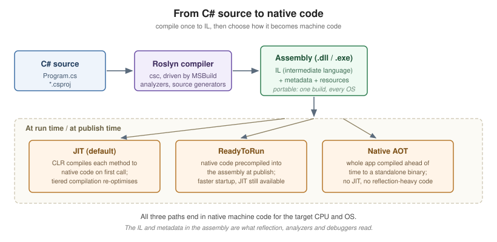

Getting Started
|
This content was generated with the assistance of AI and should be verified against the official documentation before being relied on in production. |
C# is a general-purpose, type-safe, object-oriented and functional language designed by Anders Hejlsberg at Microsoft and standardised as ECMA-334. It runs on .NET: your source is compiled by Roslyn to a portable intermediate language (IL) that a runtime then turns into native code, either just-in-time as the program runs or ahead-of-time when you publish. That combination — a high-level language with a managed runtime, a very large class library and a single cross-platform SDK — is what makes the same C# source build and run unchanged on Windows, Linux, macOS, Android, iOS and WebAssembly.
A Short History
| Version | Year | What it introduced |
|---|---|---|
C# 1.0 |
2002 |
The language itself: classes, interfaces, structs, delegates, events, properties. |
C# 2.0 |
2005 |
Generics, nullable value types, iterators ( |
C# 3.0 |
2007 |
LINQ, lambda expressions, extension methods, |
C# 4.0 |
2010 |
|
C# 5.0 |
2012 |
|
C# 6.0 |
2015 |
The Roslyn compiler, string interpolation, |
C# 7.x |
2017-18 |
Tuples and deconstruction, pattern matching, local functions, |
C# 8.0 |
2019 |
Nullable reference types, async streams, |
C# 9.0 |
2020 |
Records, top-level statements, init-only setters, target-typed |
C# 10 |
2021 |
File-scoped namespaces, global usings, record structs, extended property patterns. |
C# 11 |
2022 |
Raw string literals, generic math (static abstract members), |
C# 12 |
2023 |
Primary constructors for classes and structs, collection expressions, alias any type, inline arrays. |
C# 13 |
2024 |
|
C# 14 |
2025 |
The |
C# 14 is the version that ships with the .NET 10 SDK and is what this section documents. C# 15, paired with .NET 11, is in preview; the features it adds are covered only in clearly labelled preview subsections, and C# Versions and What’s New collects them in one place.
Where C# Is Used
-
Web and services — ASP.NET Core (minimal APIs, MVC, Razor Pages, SignalR, gRPC). This site has a whole ASP.NET Reference for that material; these pages cover the language, not the framework.
-
Web UI — Blazor, running either on the server or as WebAssembly in the browser.
-
Desktop and mobile — .NET MAUI, WPF, WinForms, Avalonia and Uno Platform. This site has a Windows Apps section for building WPF and WinUI 3 desktop applications in C#.
-
Games — Unity and Godot both script in C#. The Unity sub-section of Graphics & Games covers Unity in depth.
-
Cloud and data — Azure Functions, Orleans, Dapr, EF Core, ML.NET.
-
Tooling — Roslyn analyzers and source generators,
dotnetglobal tools, MSBuild tasks.
Installing the .NET 10 SDK
The SDK contains the compiler, the CLI, the runtime and the class library. Install it once and everything else follows.
- Windows
-
Download the installer from dotnet.microsoft.com, or use a package manager:
winget install Microsoft.DotNet.SDK.10. - macOS
-
brew install --cask dotnet-sdk, or the.pkginstaller from the same download page. Both Arm64 (Apple silicon) and x64 builds are published. - Linux
-
Most distributions package it directly —
sudo apt install dotnet-sdk-10.0on Ubuntu/Debian,sudo dnf install dotnet-sdk-10.0on Fedora/RHEL. Microsoft also publishes packages and adotnet-installscript; see Install .NET on Linux.
Verify the result:
dotnet --version # 10.0.x
dotnet --list-sdks # every SDK installed side by side
dotnet --info # SDK, runtimes, RID and install pathsSide-by-side installs are normal and safe: a project selects its SDK through its target framework and, if you
need to pin one, a global.json file.
|
NET 10 is an LTS (Long Term Support) release, supported for three years. Odd-numbered releases such as .NET 9
and .NET 11 are STS releases with 18 months of support. See C# and .NET for the full support policy and how it interacts with target framework monikers. |
Choosing an IDE
-
Visual Studio 2026 (Windows) — the full IDE: designers, profilers, hot reload, deep debugging.
-
Visual Studio Code + the C# Dev Kit extension — cross-platform, lightweight, the common choice on macOS and Linux.
-
JetBrains Rider — cross-platform commercial IDE with strong refactoring.
All three use the same Roslyn language service, so completions, analyzers and .editorconfig code style behave
identically. Nothing in this section requires an IDE: dotnet plus a text editor is enough. For links to each
product’s official page, see C# IDEs & Tools.
Your First Program
dotnet new console -o HelloWorld
cd HelloWorld
dotnet rundotnet new console scaffolds two files. The project file is small because the SDK supplies the defaults:
<Project Sdk="Microsoft.NET.Sdk">
<PropertyGroup>
<OutputType>Exe</OutputType>
<TargetFramework>net10.0</TargetFramework>
<ImplicitUsings>enable</ImplicitUsings>
<Nullable>enable</Nullable>
</PropertyGroup>
</Project>Program.cs uses top-level statements — no class, no Main, just the code:
Console.WriteLine("Hello, World!");The compiler wraps that in a synthesised entry point for you. ImplicitUsings is why Console resolves without
a using System; line, and Nullable turns on
nullable reference types. Both are on by
default in new projects and both are assumed throughout this section.
The traditional explicit form still works and is what you will see in older code:
namespace HelloWorld;
internal class Program
{
private static void Main(string[] args)
{
Console.WriteLine("Hello, World!");
}
}A program may have top-level statements in one file only, and cannot combine them with an explicit Main in
the same project.

File-Based Apps (C# 14)
C# 14 and the .NET 10 SDK let you run a single .cs file with no project at all — ideal for scripts, learning
and reproducing a bug report:
dotnet run hello.csSuch a file may carry file-level directives that replace what a .csproj would otherwise say:
#!/usr/bin/env dotnet
#:sdk Microsoft.NET.Sdk
#:package Humanizer@2.14.1
#:property LangVersion=latest
Console.WriteLine("Runs straight from a single file.");#:package adds a NuGet reference, #:sdk selects the SDK, and #:property sets any MSBuild property. On
Unix-like systems the #! shebang plus chmod +x makes the file directly executable. When a script outgrows
this format, dotnet project convert hello.cs turns it into a normal project.
These directives are covered in full in Preprocessor Directives and Compilation.
The Everyday CLI Commands
dotnet new console -o MyApp # scaffold a project (see `dotnet new list` for templates)
dotnet build # compile
dotnet run # build and run
dotnet watch # rebuild and rerun on every save
dotnet test # run the test projects
dotnet publish -c Release # produce a deployable output
dotnet format # apply .editorconfig code styleBuild and Tooling covers these in depth.
C# for Java Developers
If you are coming from Java — this site’s Java Reference is the companion section — most of your instincts transfer, with these differences worth knowing on day one:
| Java | C# | Note |
|---|---|---|
|
|
Namespaces need not match the folder layout, and are |
|
|
Also |
|
|
Three distinct concepts rather than one keyword. |
Getters and setters |
Properties |
First-class language feature, not a naming convention. |
Erased generics |
Reified generics |
|
Checked exceptions |
None |
|
Streams |
LINQ |
See LINQ. |
|
|
Very similar, but C# adds |
Everything is a reference type |
|
See Also
-
C# and .NET — the runtime, the class library and the release cadence behind the language.
-
Lexical Structure and Style — the spelling rules and the conventions this section follows.
-
Build and Tooling — the
dotnetCLI, MSBuild and the debugging and diagnostics tools. -
ASP.NET Reference — for web applications and services built on this language.
References
-
Microsoft Learn — What’s new in the .NET 10 SDK (file-based apps).